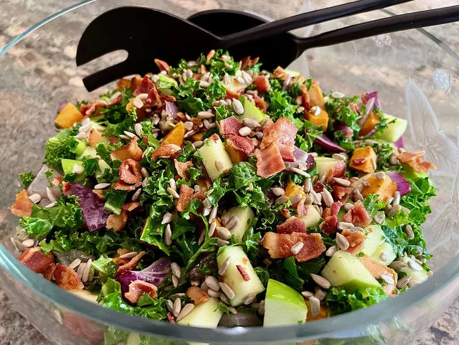

Odin Recipes
Home

Kale Sweet Potato Salad
This kale sweet potato salad has something for everyone—sweet, salty, crunchy, tangy—and your mom will be so happy you are eating kale! Roast the sweet potato and onion a day ahead, if you like, to save time.
Recipe
- 1 sweet potato
- 1/2 red onion
- 2 tablespoons olive oil
- salt and freshly ground black pepper to taste
- 4 strips bacon
- 1 bunch kale
- 1 Granny Smith apple - cored and diced
- 2 green onions, sliced
Salad Dressing:
- 1/4 cup apple cider vinegar
- 1 teaspoon Dijon mustard
- 1 tablespoon honey, or to taste
- salt and freshly ground black pepper to taste
- 1/2 cup raw, unsalted sunflower seeds (optional)
- 1/4 cup bacon grease or other oil
Steps
- Preheat the oven to 400 degrees F (200 degrees C). Line a 12 x18-inch rimmed baking sheet with parchment paper.
- Peel and dice sweet potato into 3/4-inch pieces, about 2 cups, and place in a bowl. Dice onion into 3/4-inch pieces and add to sweet potatoes. Add olive oil; season with salt and pepper, and stir to combine. Spread vegetables in a single layer on the prepared baking sheet.
- Bake in the center of the preheated oven until sweet potatoes are fork tender, but not mushy, about 20 minutes. Remove from the oven and allow to cool.
- Meanwhile, cook bacon in a large skillet over medium heat until brown and crisp, 5 to 8 minutes, turning occasionally. Remove from heat, crumble, and set aside. Reserve bacon fat and allow to cool, but do not refrigerate.
- Remove tough stems from kale, rinse well, and place in a colander to drain. Lightly press kale with paper towels to assist with drying.
- Cut kale into bite-sized pieces and place in a large salad bowl. Add cooled sweet potatoes and onions, apple, and green onions.
- To make dressing, place reserved bacon fat, about 1/4 cup, in a pint jar with a well-fitting lid. If you don't have enough bacon fat, add enough oil to get to 1/4 cup. Add vinegar, mustard, honey, and salt and pepper, to taste. Attach the lid and shake vigorously to combine.
- Pour dressing over salad, and toss. Sprinkle crumbled bacon over salad, and garnish with sunflower seeds.